Care for the Culture / PRC Submission Walkthrough / April 2026
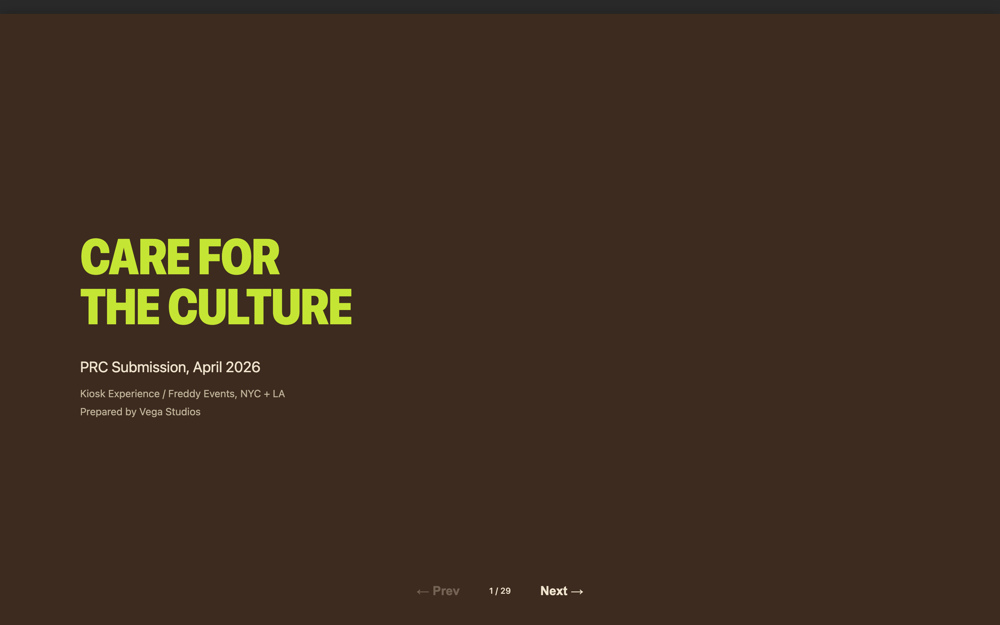
This is Care for the Culture, a kiosk experience designed for Freddie events in New York and LA.
The kiosk lives inside the party. It collects a photo, a zip code, and one question about PrEP awareness. In return, it shows each person how HIV prevention data looks in their own neighborhood.
Everything you see here has been built, tested, and is ready for review.
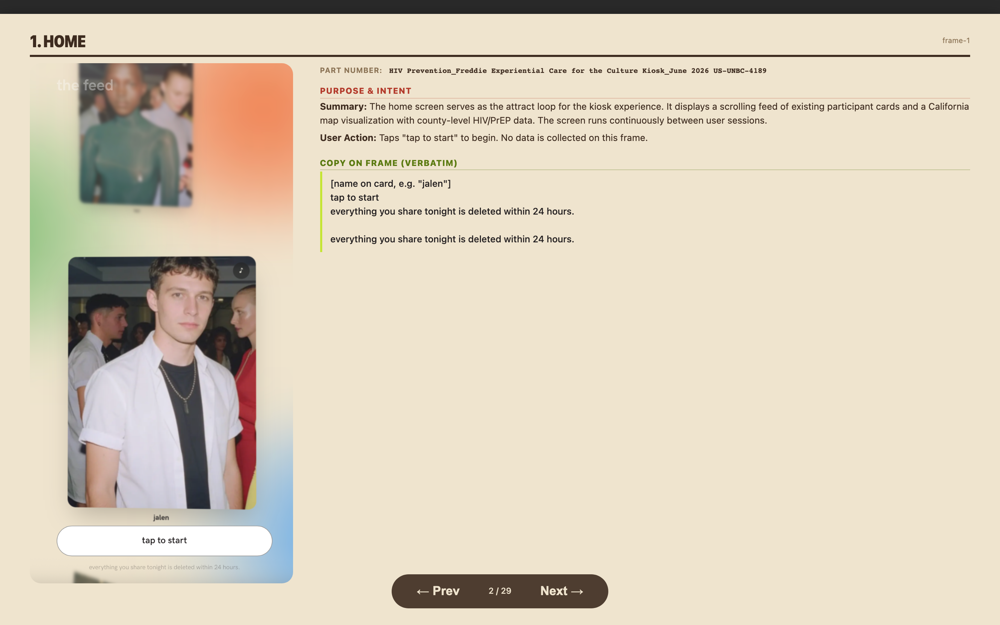
This is what the kiosk looks like when nobody's using it. A scrolling feed of photos from people who've already gone through the experience tonight.
The screen says "tap to start" and a small line at the bottom: "everything you share tonight is deleted within 24 hours."
That's the privacy promise, visible before anyone engages.
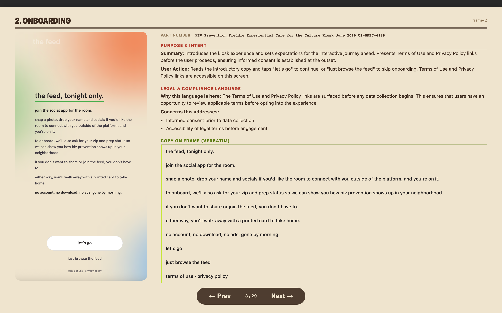
"The feed, tonight only." That's the headline.
This screen explains the entire experience in plain language. What we collect, what we don't, and what they walk away with. No account, no download, no ads. Gone by morning.
Terms of Use and Privacy Policy links are accessible here, before any data collection begins.
Two options: "let's go" to start, or "just browse the feed" to skip everything and look at other people's cards.
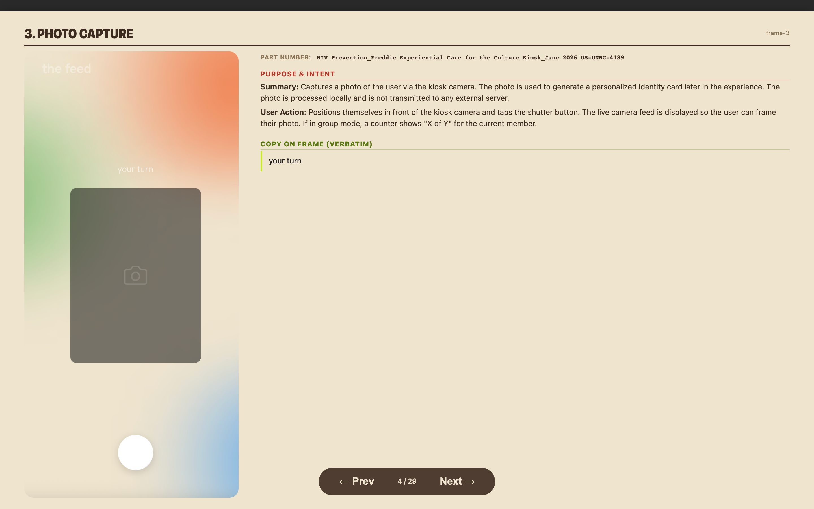
Simple camera screen. "Your turn."
The photo is processed locally on the kiosk. It's used to generate their card and goes nowhere else.
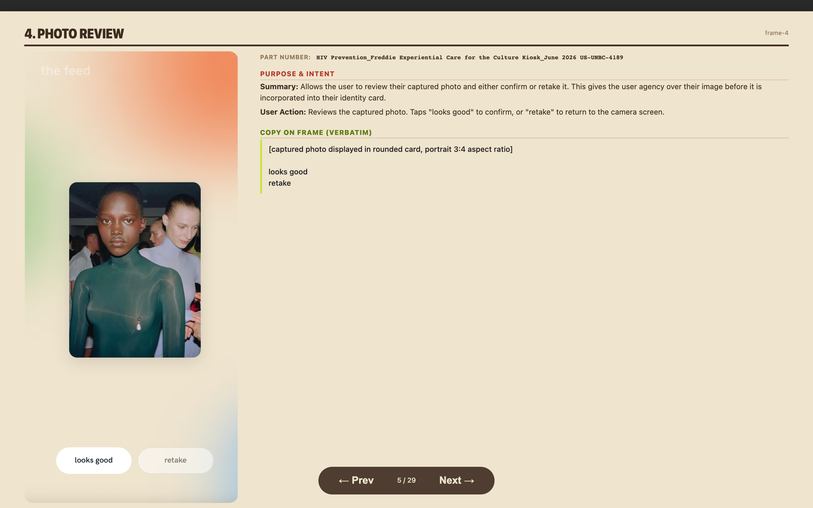
They see their photo and choose: "looks good" or "retake."
Full control over their image before anything moves forward.
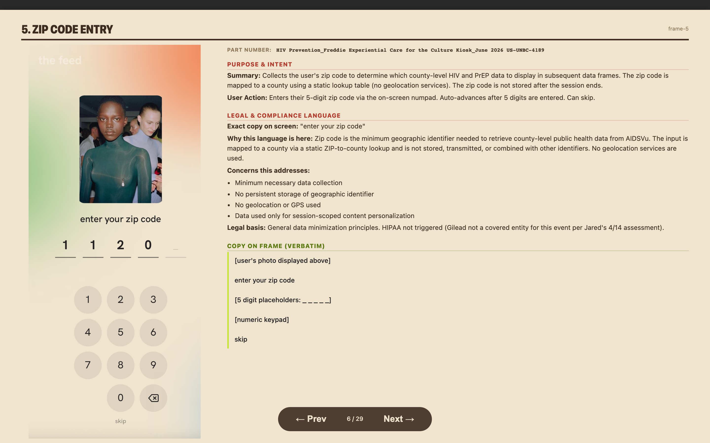
We ask for their zip code. This is the minimum geographic identifier needed to pull county-level data from AIDSVu.
It's mapped to a county using a static lookup table. No geolocation services. Not stored after the session. They can skip this entirely.
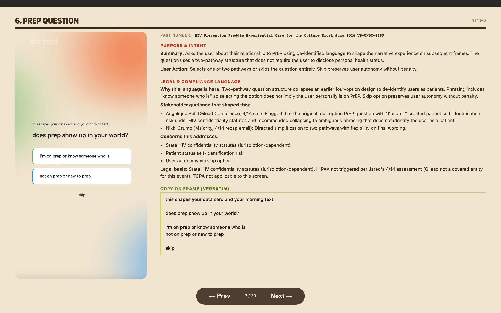
"Does prep show up in your world?"
Two options: "I'm on prep or know someone who is" and "Not on prep or new to prep." Plus a skip button.
This was originally four options. Gilead compliance recommended collapsing to two so that selecting either option does not identify the user as a patient. The phrasing "or know someone who is" is deliberate.
This answer shapes the narrative tone on later screens. It is never displayed as text, only as a color tint. It is stored separately from the photo.
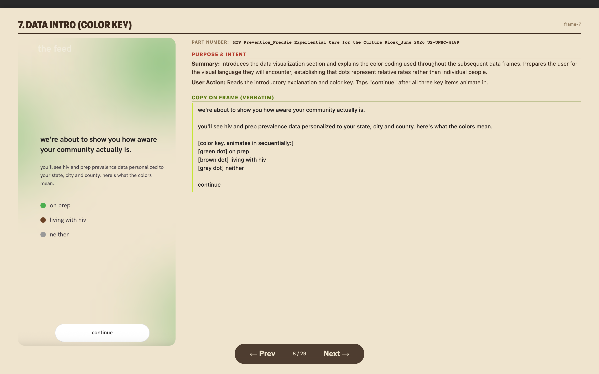
"We're about to show you how aware your community actually is."
This screen sets up the visual language. Green dots mean on PrEP. Brown dots mean living with HIV. Gray means neither. This key stays consistent through every data screen that follows.
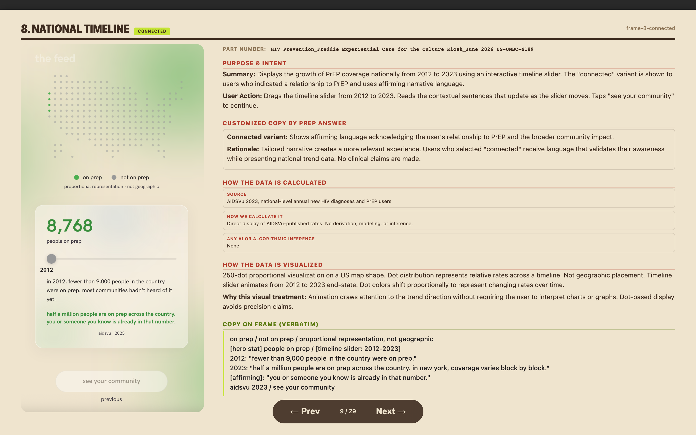
The user drags a slider from 2012 to 2023 and watches PrEP coverage grow across the country. 250 dots on a US map, shifting from gray to green as the number climbs.
At the end: "Half a million people are on prep across the country. You or someone you know is already in that number."
All data comes directly from AIDSVu. No modeling, no inference.
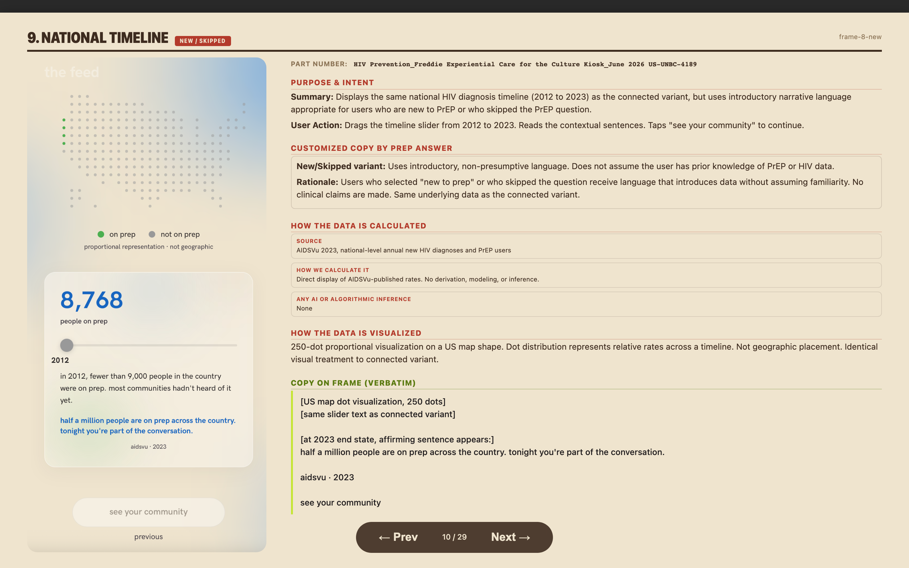
Same data visualization, different closing language.
For someone new to PrEP: "Tonight you're part of the conversation."
The data is identical. Only the affirming sentence changes based on their earlier answer.
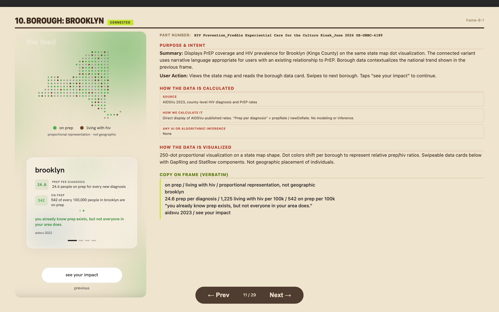
Now we zoom into New York State. The user swipes through four boroughs: Brooklyn, The Bronx, Manhattan, Queens.
Each card shows PrEP coverage and HIV prevalence on the same map. The dots shift proportionally per borough so you can see the gap visually.
The numbers are real. Brooklyn: 542 of every 100,000 on PrEP. 1,225 of every 100,000 living with HIV. 24.6 people on PrEP for every new diagnosis.
An affirming sentence rotates per borough. For connected users, things like: "You already know prep exists, but not everyone in your area does."
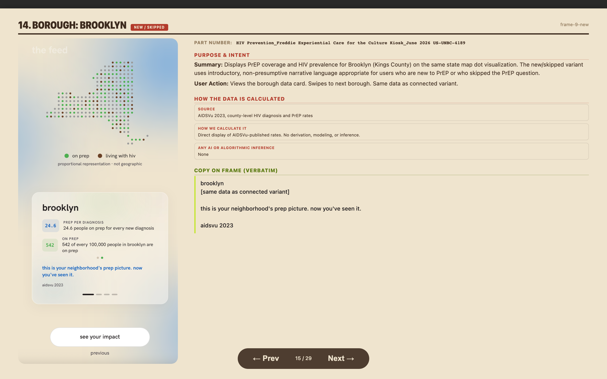
Same borough data, different narrative for someone new to PrEP.
"This is your neighborhood's prep picture. Now you've seen it."
Observational, not prescriptive. We show them the numbers and let the data speak.
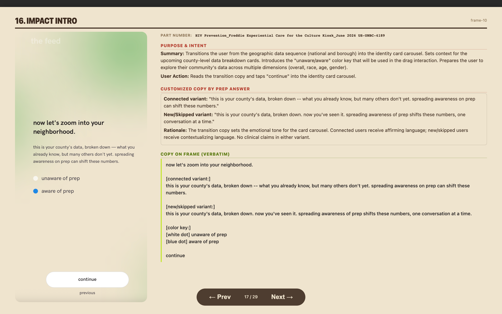
"Now let's zoom into your neighborhood."
This transitions from the state-level view to the county level. It introduces the awareness key: white dots for unaware of PrEP, blue for aware. The user is about to interact with the data directly.
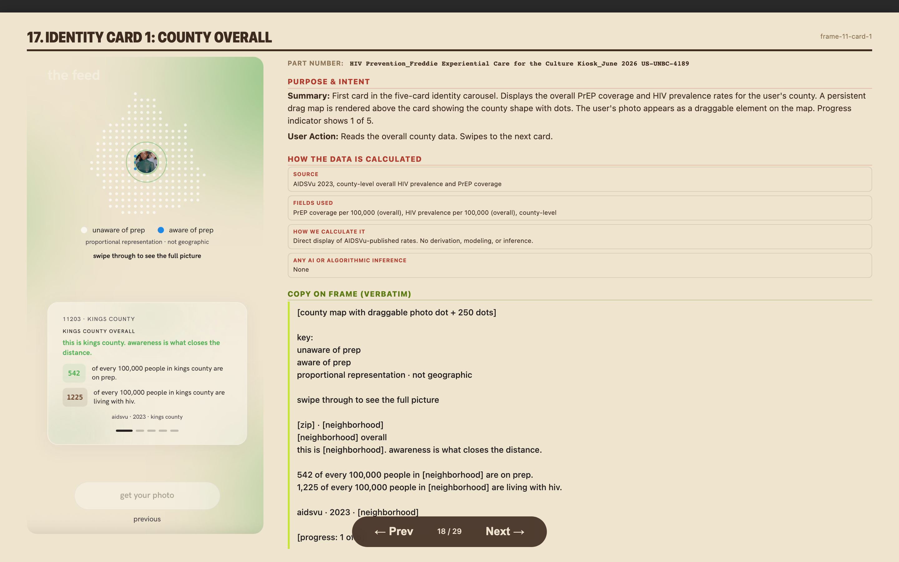
Five swipeable cards, each showing a different cut of the county data.
Card 1: County Overall. PrEP coverage vs HIV prevalence, side by side. The gap is visible immediately.
Card 2: By Race. New diagnosis rates broken down. Black residents at 39 per 100,000. Hispanic at 36. White at 7. The awareness gap shows up in the numbers.
Card 3: By Age. PrEP coverage concentrated in ages 25-34 at 1,384 per 100,000. Ages 55+ at just 118.
Card 4: By Gender. 1,021 men per 100,000 on PrEP. 62 women. That's the widest gap in the entire experience.
Card 5: Spread Awareness. The user drags their photo across the county map. White dots turn blue as they drag, representing awareness spreading. A counter tracks how many people they "reached."
All data is directly from AIDSVu. No inference, no modeling. The drag interaction is the emotional payoff of the entire experience.
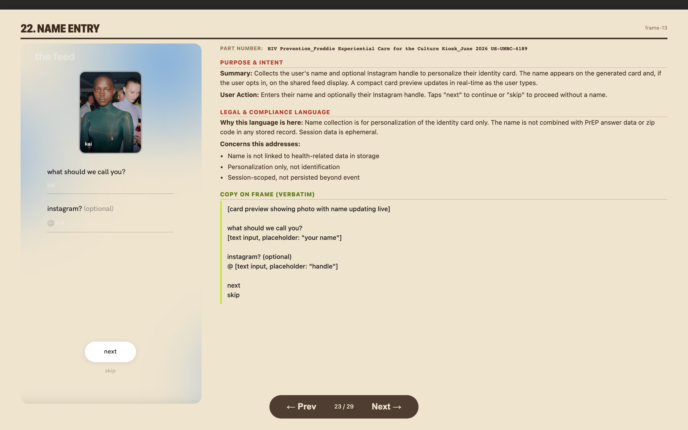
"What should we call you?"
Optional name and Instagram handle. This goes on their card in the feed. They can skip both.
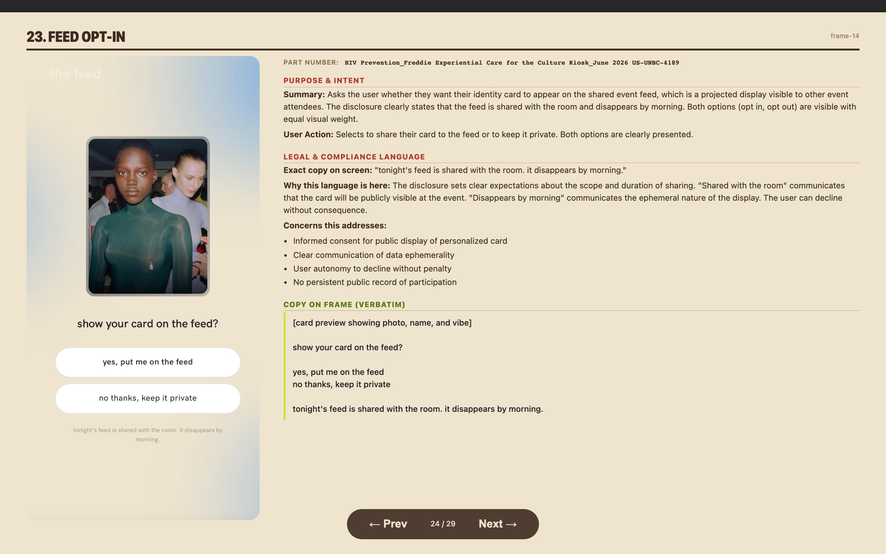
"Show your card on the feed?"
They choose whether their card appears on the scrolling feed visible to the room. The disclosure: "Tonight's feed is shared with the room. It disappears by morning."
Either way, they get their printed card.
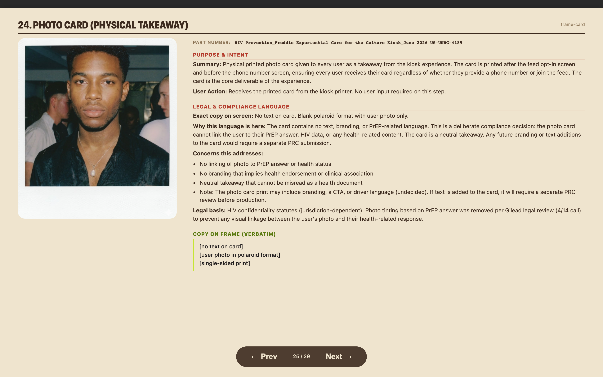
This is the printed card. Every user gets one, regardless of whether they joined the feed or entered their phone number.
The card is intentionally blank. No text, no branding, no PrEP-related language. The photo is not tinted or color-coded based on their answer. This was a specific compliance requirement: the card cannot link the photo to any health-related response.
Future branding on the card would require a separate PRC submission.
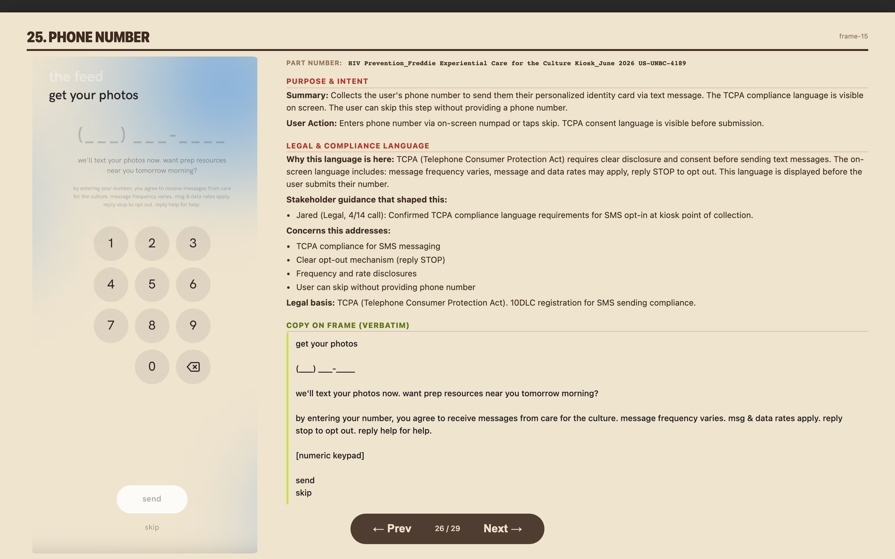
"Get your photos."
They can enter their phone number to receive their photos via text, plus optional PrEP resources the next morning.
TCPA-compliant consent language is visible on screen. Message frequency varies. They can skip.
The phone number is stored separately from the PrEP answer. Session ID is the only join key, and it's purged within 24 hours.
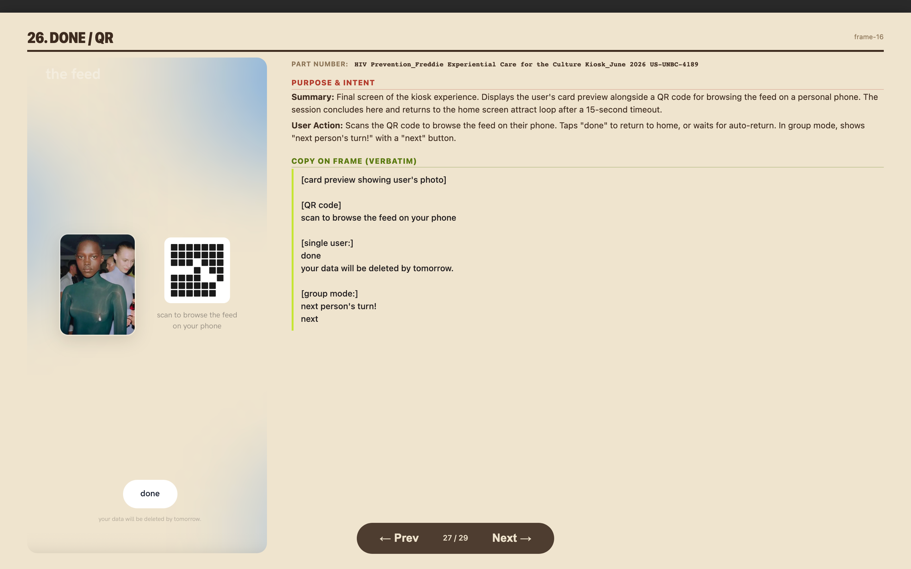
Final screen. A QR code to browse the feed on their phone. And the closing line: "Your data will be deleted by tomorrow."
That's the full experience. Photo, zip code, one question, personalized data, printed card, and everything gone by morning.
end of walkthroughCare for the Culture / PRC Submission / Speaker Notes
HIV Prevention_Freddie Experiential Care for the Culture Kiosk_June 2026 US-UNBC-4189